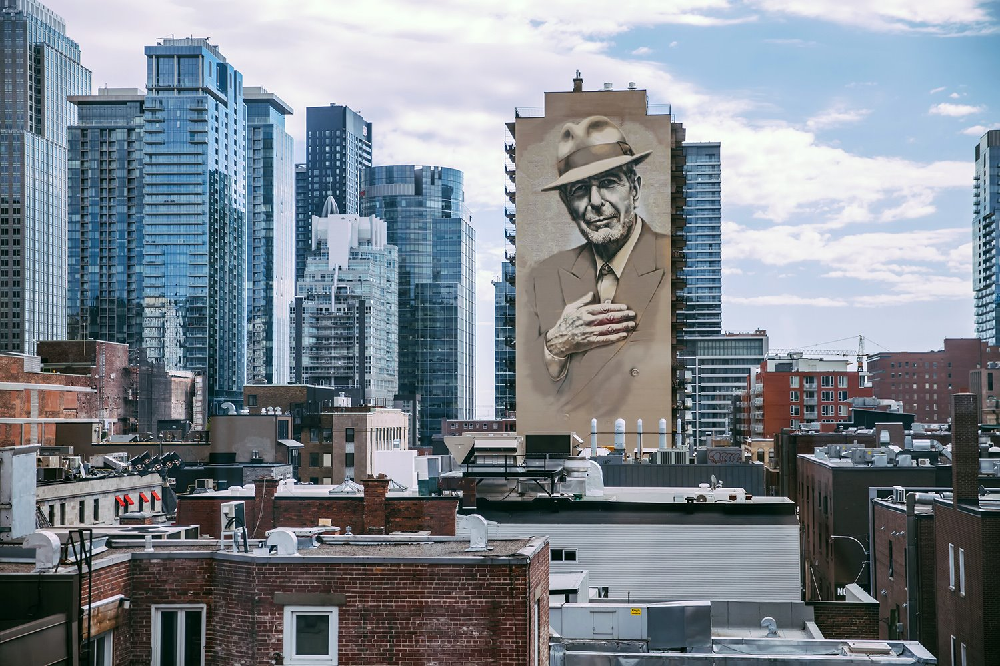
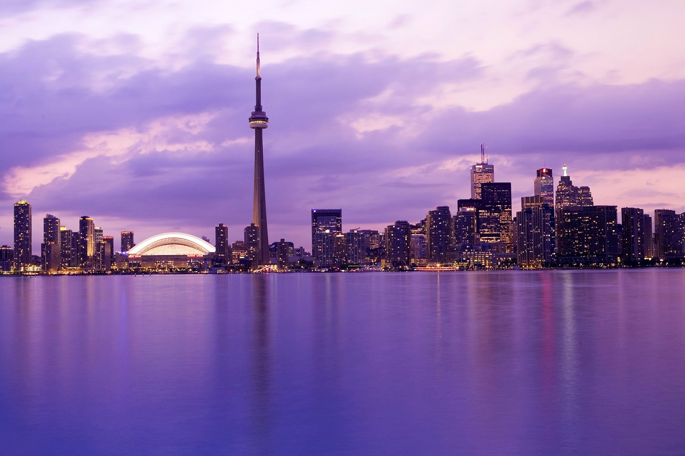
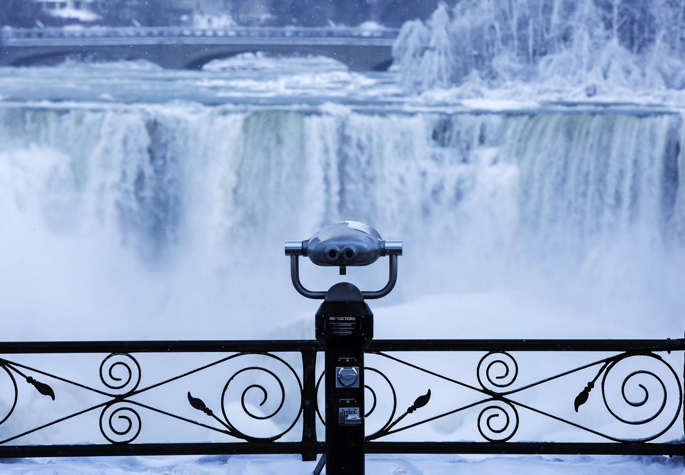
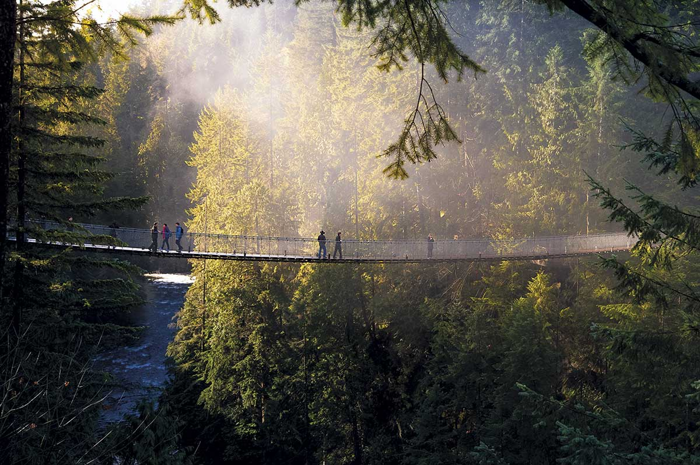
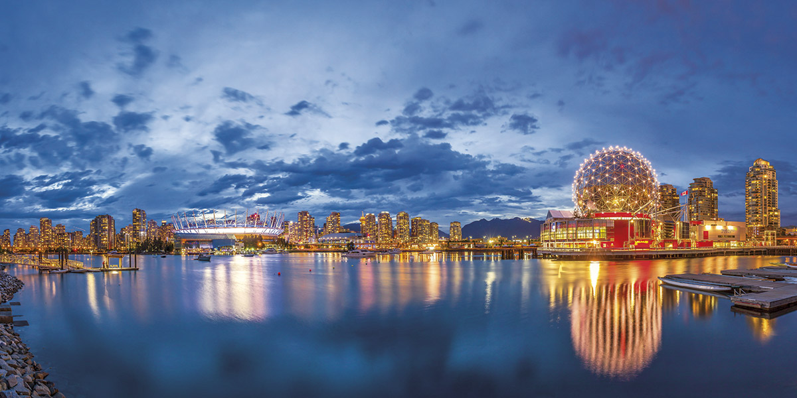

Ubicación: América del Norte.
Población: 37.59 millones de habitantes.
Capital: Ottawa.
Coordenadas GPS: 45.4208 -75.69 45° 25' 15'' Norte, 75° 41' 24'' Oeste.
¿Tiene costa?: Sí.
Montreal
Montreal es la ciudad más grande de la provincia de Quebec en Canadá. Se ubica en una isla en el río San Lorenzo y su nombre viene del Mont-Royal, el cerro con tres cimas que se ubica en su centro.
Canadian National Tower
La CN Tower es una torre de radiodifusión autoportante, la más alta de América, con una altura de 553,3 metros. Fue la más alta del mundo desde 1975 a 2007, cuando fue superada por el Burj Khalifa.
Cataratas del Niágara
Las cataratas del Niágara son un conjunto de cascadas situadas en el río Niágara, su caída es de aproximadamente 51 metros.
Puente colgante de Capilano
El puente colgante de Capilano cruza el río Capilano en el Distrito de Vancouver Norte, tiene una longitud de 140 metros, y se encuentra suspendido a 70 metros de altura sobre el río.
Museo de ciencias de Vancouver
La cúpula geodésica de 47 metros del Museo de Ciencias de Vancouver, diseñada para la Expo 86, es un emblema de la ciudad. La Expo de 1986 dio pie a profundas intervenciones urbanas, una de ellas se realizó en Yaletown, antigua terminal de la Canadian Pacific Railway.
Quizás te interese: Canadá con acento Español

{kind=link}
{kind=link}
{kind=link}
{kind=link}
{kind=link}